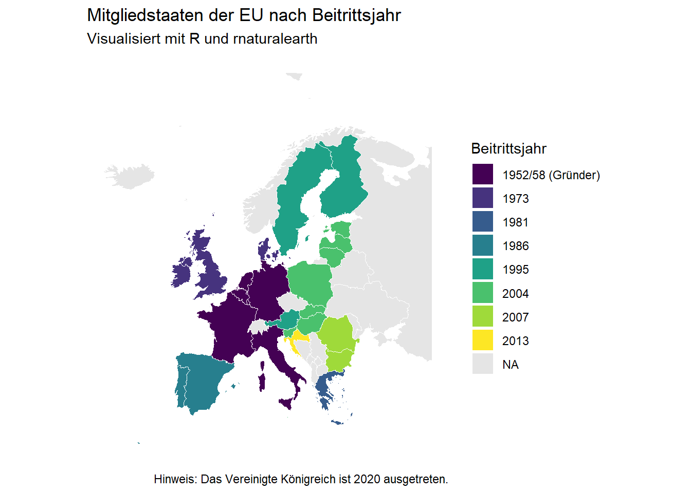

# Notwendige Pakete laden (falls nicht installiert: install.packages("..."))
library(tidyverse)── Attaching core tidyverse packages ──────────────────────── tidyverse 2.0.0 ──
✔ dplyr 1.1.4 ✔ readr 2.1.5
✔ forcats 1.0.0 ✔ stringr 1.5.1
✔ ggplot2 3.5.2 ✔ tibble 3.2.1
✔ lubridate 1.9.3 ✔ tidyr 1.3.1
✔ purrr 1.0.2
── Conflicts ────────────────────────────────────────── tidyverse_conflicts() ──
✖ dplyr::filter() masks stats::filter()
✖ dplyr::lag() masks stats::lag()
ℹ Use the conflicted package (<http://conflicted.r-lib.org/>) to force all conflicts to become errorslibrary(rnaturalearth)Warning: Paket 'rnaturalearth' wurde unter R Version 4.3.3 erstelltlibrary(rnaturalearthdata)Warning: Paket 'rnaturalearthdata' wurde unter R Version 4.3.3 erstellt
Attache Paket: 'rnaturalearthdata'
Das folgende Objekt ist maskiert 'package:rnaturalearth':
countries110library(sf)Warning: Paket 'sf' wurde unter R Version 4.3.3 erstelltLinking to GEOS 3.11.2, GDAL 3.8.2, PROJ 9.3.1; sf_use_s2() is TRUE# 1. Geodaten für Europa laden
europe <- ne_countries(scale = "medium", continent = "europe", returnclass = "sf")
# 2. Datenrahmen mit den Beitrittsjahren erstellen
eu_accession <- data.frame(
name = c("Belgium", "Germany", "France", "Italy", "Luxembourg", "Netherlands",
"Denmark", "Ireland", "United Kingdom",
"Greece",
"Portugal", "Spain",
"Austria", "Finland", "Sweden",
"Estonia", "Latvia", "Lithuania", "Malta", "Poland", "Slovakia", "Slovenia", "Czech Rep.", "Hungary", "Cyprus",
"Bulgaria", "Romania",
"Croatia"),
beitritt = c(rep("1952/58 (Gründer)", 6),
rep("1973", 3),
"1981",
rep("1986", 2),
rep("1995", 3),
rep("2004", 10),
rep("2007", 2),
"2013")
)
# 3. Geodaten mit den Beitrittsdaten verbinden (Left Join)
europe_eu <- europe %>%
left_join(eu_accession, by = "name") %>%
# Filter für eine bessere Ansicht (optional: schneidet Russland/Überseegebiete teils ab)
st_crop(xmin = -25, xmax = 45, ymin = 30, ymax = 75)Warning: attribute variables are assumed to be spatially constant throughout
all geometries# 4. Karte plotten
ggplot(data = europe_eu) +
geom_sf(aes(fill = beitritt), color = "white", size = 0.2) +
scale_fill_viridis_d(option = "viridis", na.value = "grey90", name = "Beitrittsjahr") +
theme_minimal() +
labs(
title = "Mitgliedstaaten der EU nach Beitrittsjahr",
subtitle = "Visualisiert mit R und rnaturalearth",
caption = "Hinweis: Das Vereinigte Königreich ist 2020 ausgetreten."
) +
theme(
panel.grid = element_blank(),
axis.text = element_blank()
)